You need to install the iSphere Library on which many of the iSphere plug-ins rely. The recommended way, and the one that requires the least effort, is the Integrated Upload Feature. You can also install the library manually.
| Note: The library is saved for V7R1, so you cannot use the Integrated Upload Feature if you are on an earlier release. The library can be compiled for V6R1, but you need to do that by yourself, using an i Project. (V7R1 is the earliest release the iSphere developers can save the library for.) |
| Important: We are sorry to let you know that we no longer have an option to create the iSphere library for V6R1. Version 3.5.4.r was the last release with a V6R1 library. All newer versions will be compiled for V7R1. Please refer to Using an i Project to read how to install the library from an i Project. |
Select the option that works best for you:
| Using the Integrated Upload Feature |
| Doing it By Hand |
| Using an i Project (no FTP) |
| *NONE | - | The DLTLIB and RSTLIB commands are executed without the ASPDEV and RSTASPDEV parameters. |
| asp-device-name | - | The DLTLIB command is executed with ASPDEV(*) and the RSTLIB command is extended with RSTASPDEV(asp-device-name). |
| Use the "System Ccsid" field to specify the CCSID of your system. The value specified here is used for validating object names. |
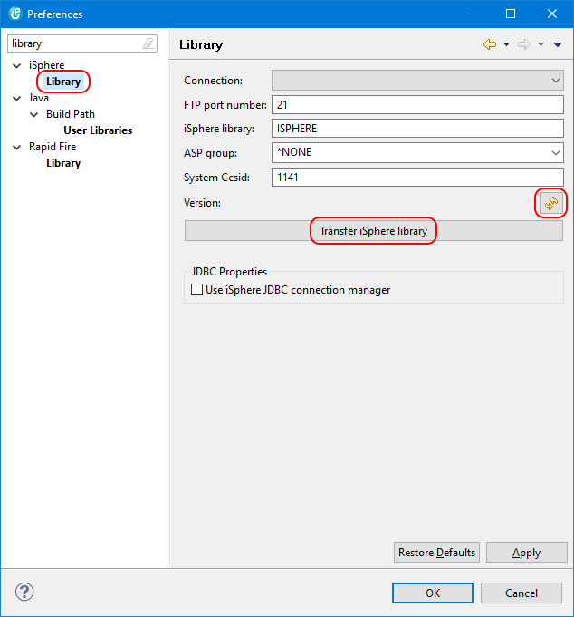
(The screenshot above is from RDi, but the WDSC screen is very similar.)
| *DFAULT | - | The DLTLIB and RSTLIB commands are executed without the ASPDEV and RSTASPDEV parameters. |
| asp-device-name | - | The DLTLIB command is executed with ASPDEV(*) and the RSTLIB command is extended with RSTASPDEV(asp-device-name). |
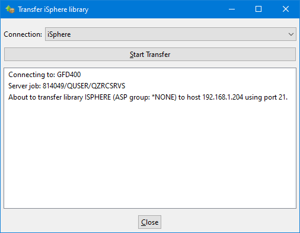
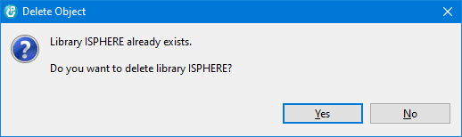
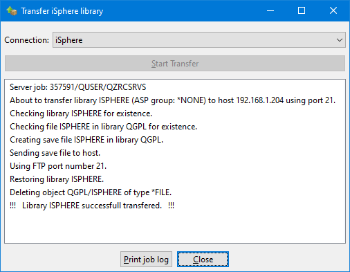
Alternatively you can use CTRL-A to select all messages and CTRL-C to copy the selected messages to the clipboard.
| Use the connection properties to specify a different iSphere library for certain connections. |
There are two options for uploading the library by hand: FTP and IFS
For both options you start with retrieving the save file from the plug-in jar file.
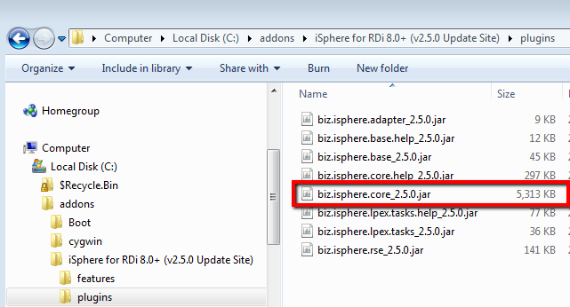
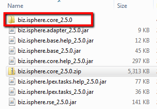
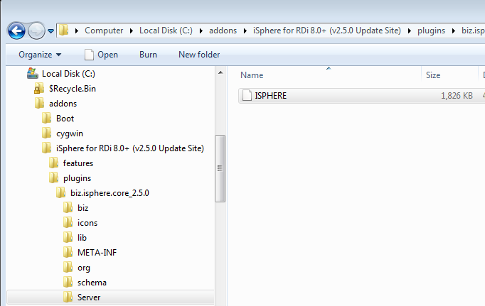
Now decide whether you want to upload the save file with FTP or via the IFS. Choose option 2.a for FTP and option 2.b for IFS.
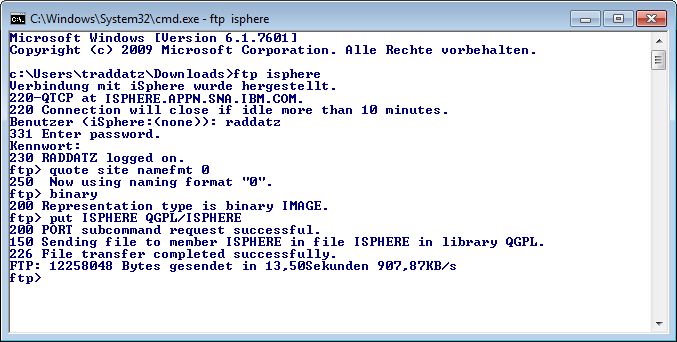
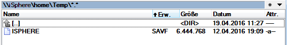
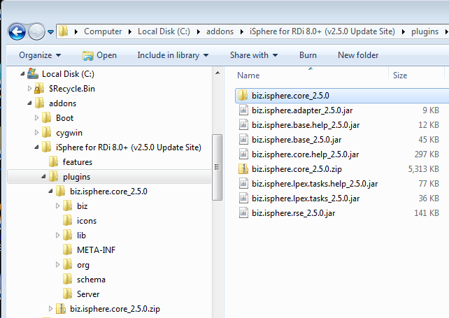
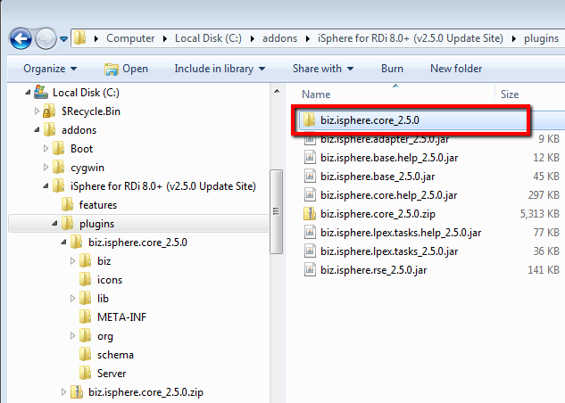
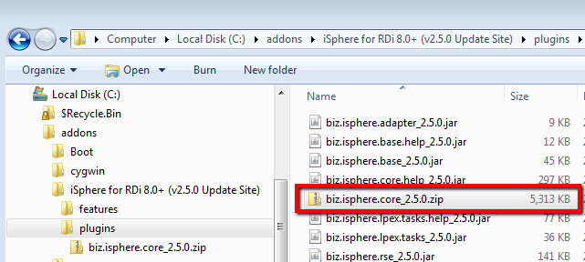
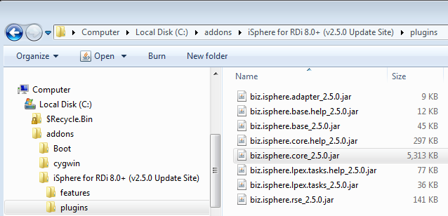
If you cannot use FTP to install the iSphere library, you can try to do it with an i Project from RDi or WDSCi. First you need to copy the iSphere project from the repository to your workspace. You may either connect to SourceForge and check out the project directly from the repository or download a snapshot of the repository to your PC and import the iSphere project from there.
Please refer to The iSphere Host Project to learn how to checkout the project from SourceForge using SVN.
For the latter option, go to the iSphere project home at GitHub and click Download Zip from the green button:
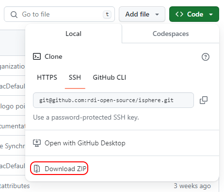
Then click extract the content of the zip file to an empty folder on your computer.
Open RDi and switch to the i Projects perspective. Select File -> Import... -> General -> Existing Projects into Workspace and click Next. Then choose option Select root directory and click Browse to select the folder. Click Deselect All and reselect project iSphere. Click Finish to import the project to your workspace.
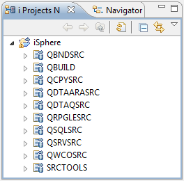
Eventually build the iSphere library as described in Library Build.